1-270本次已剔除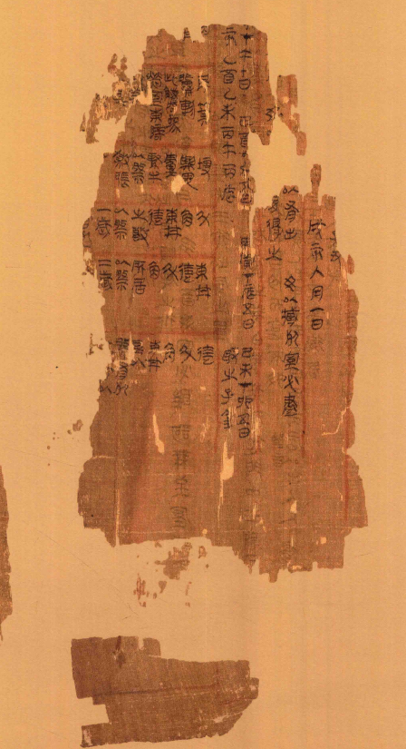原图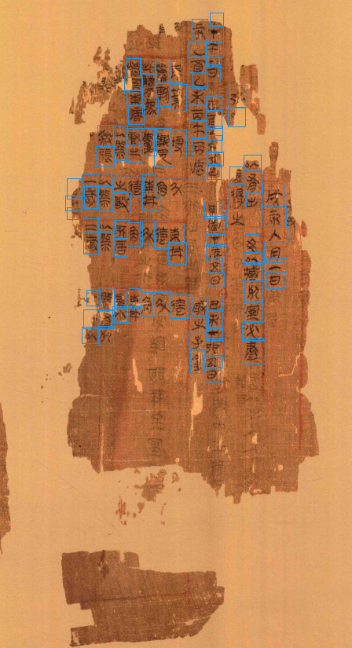已有坐标框448 × 825 px · 116 个框讨论结论：建议剔除 备注：未填写备注原筛查提示（非师兄新增意见）下方小片与主体分离，主体仍较连续；局部字迹淡弱需要与残损程度分别判断。建议结合残存文字与标注完整性判断，不能仅因破损就删除。
2-15本次已剔除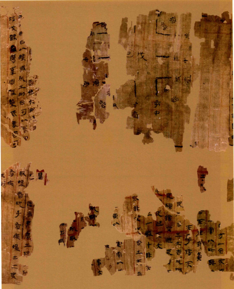原图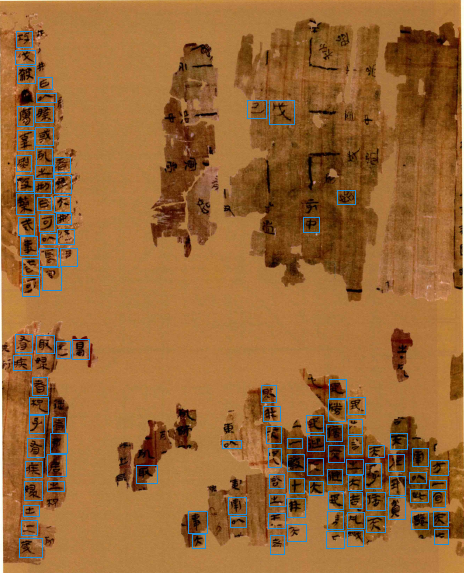已有坐标框464 × 573 px · 108 个框讨论结论：建议剔除 备注：未填写备注原筛查提示（非师兄新增意见）图示、窄条与下部表格残片分散，中心大片空缺；另有已记录的漏标问题，需单独处理。如任务要求完整整页，建议优先讨论是否筛出；用于残存文字检测时仍可能有价值。
2-34本次已剔除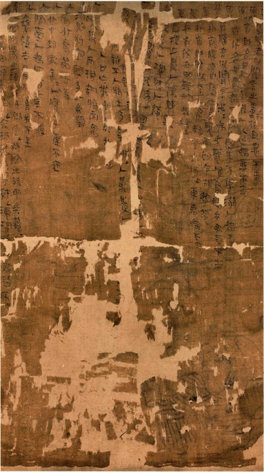原图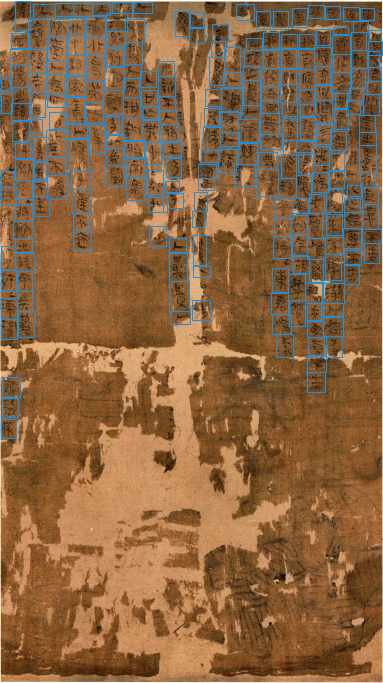已有坐标框383 × 683 px · 248 个框讨论结论：建议剔除 备注：未填写备注原筛查提示（非师兄新增意见）下半部有明显破碎缺口，上部文字面保留较多。建议结合残存文字与标注完整性判断，不能仅因破损就删除。
2-93本次已剔除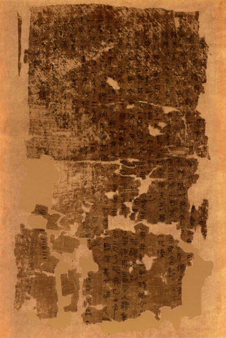原图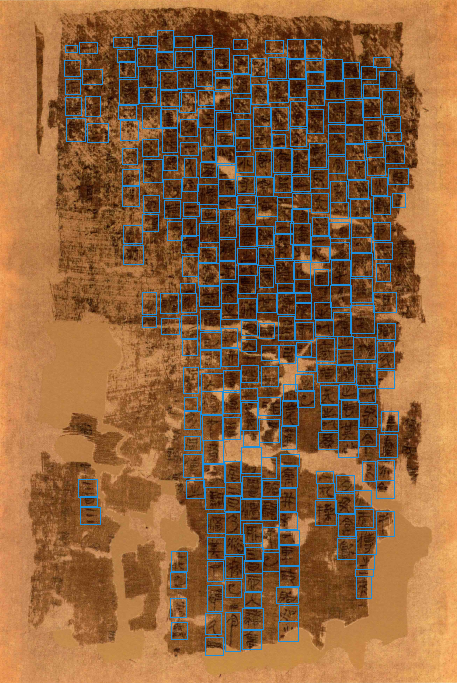已有坐标框457 × 683 px · 330 个框讨论结论：建议剔除 备注：未填写备注原筛查提示（非师兄新增意见）下半部呈碎裂形态，上半部文字面较连续；图像纹理与释读质量应另行审核。建议结合残存文字与标注完整性判断，不能仅因破损就删除。
2-122本次已剔除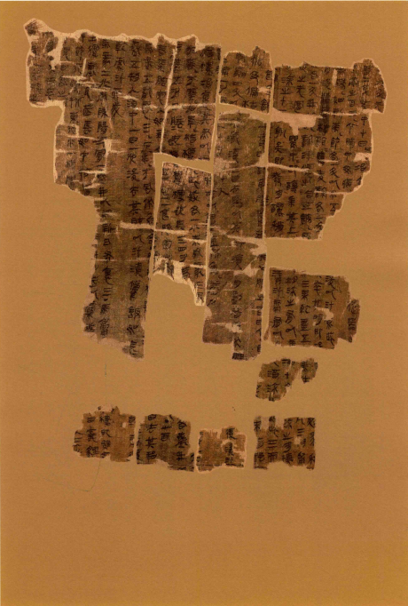原图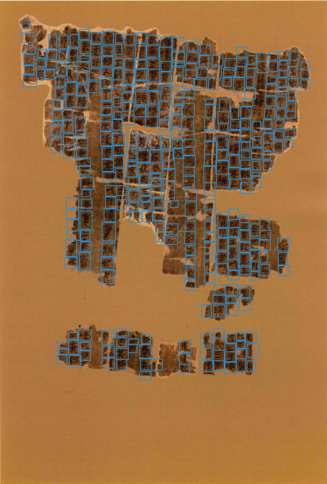已有坐标框460 × 682 px · 382 个框讨论结论：建议剔除 备注：未填写备注原筛查提示（非师兄新增意见）上方较大的表格残片群与底部横条分离；上方保留的表格及文字较丰富。建议结合残存文字与标注完整性判断，不能仅因破损就删除。
2-138本次已剔除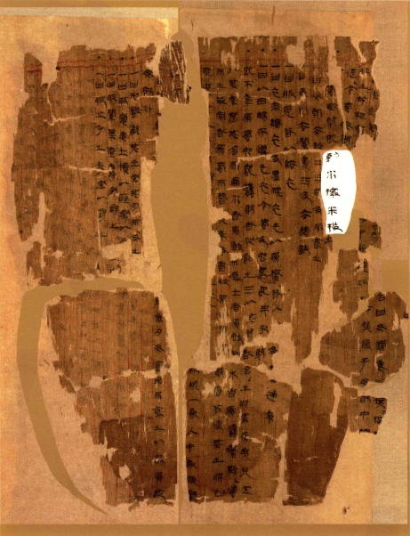原图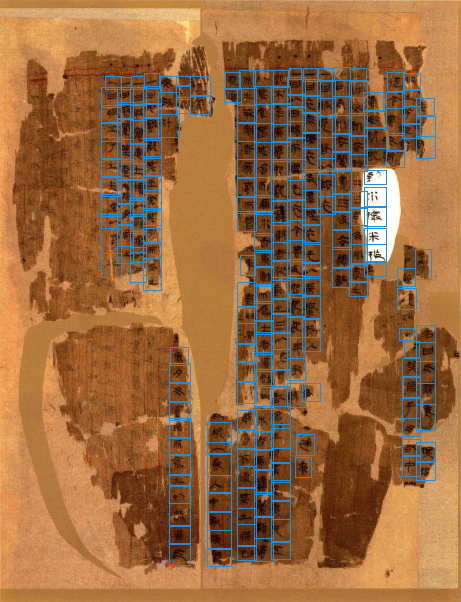已有坐标框461 × 602 px · 261 个框讨论结论：建议剔除 备注：未填写备注原筛查提示（非师兄新增意见）画面有贯穿缺口和分离文字块，但仍保留较多文字；白色补片字已由用户确认可接受，不作为问题依据。建议结合残存文字与标注完整性判断，不能仅因破损就删除。
1-230此前已剔除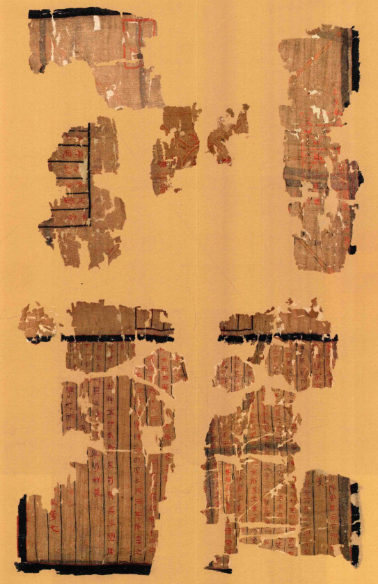原图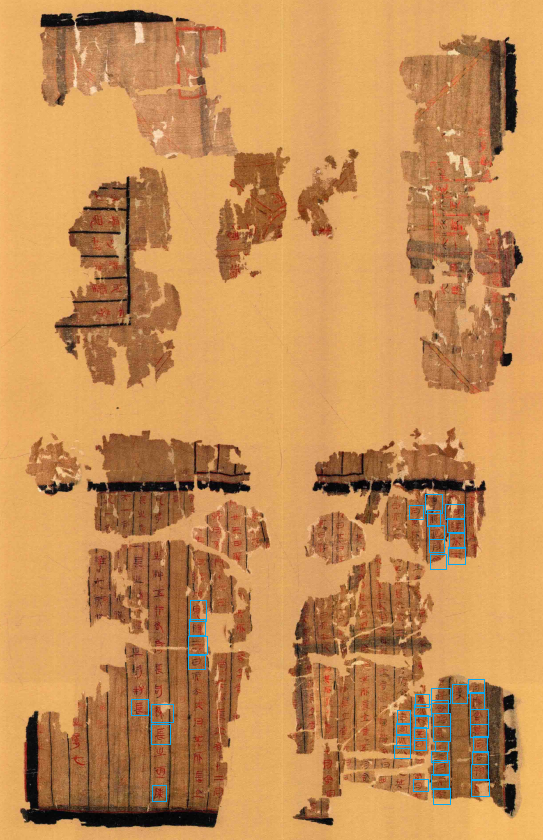已有坐标框543 × 840 px · 46 个框讨论结论：建议剔除 备注：未填写备注原筛查提示（非师兄新增意见）碎片分散；现有46框仅覆盖下部少量位置，多处可见文字未框。建议暂从完整标注训练集筛出，待核对标注范围或补标。
1-232此前已剔除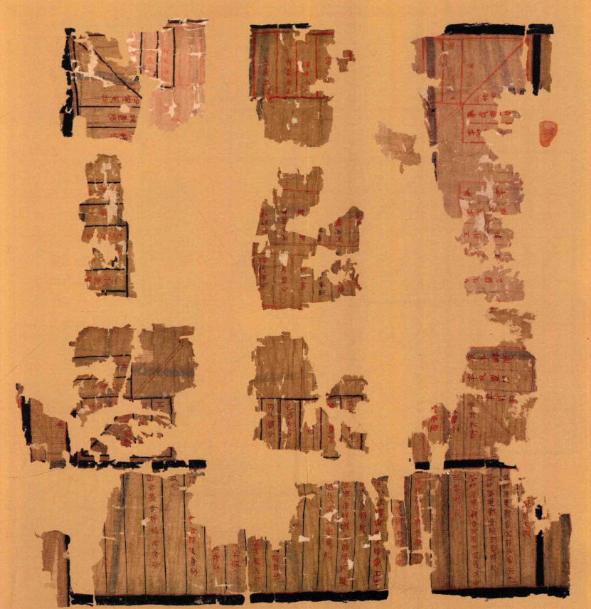原图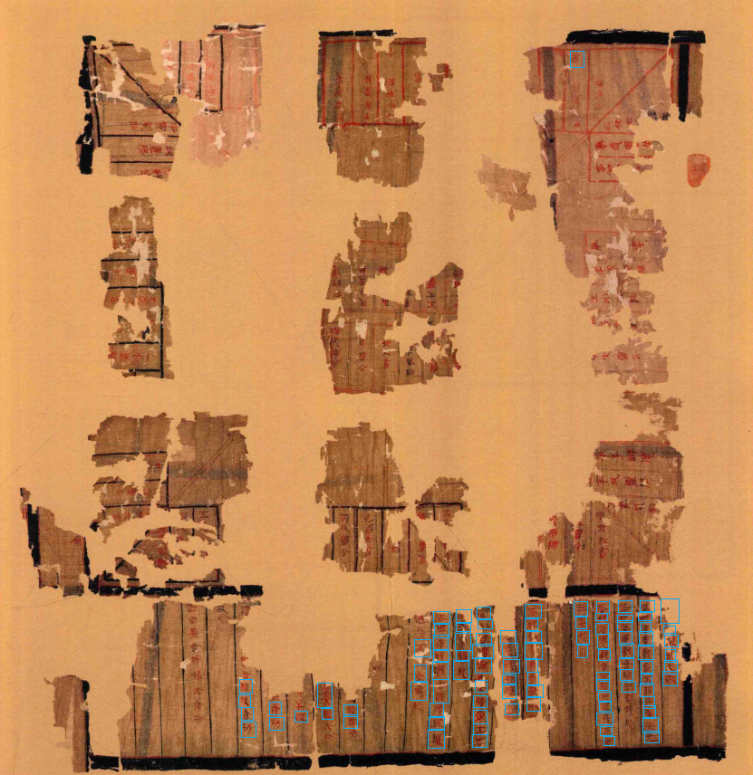已有坐标框831 × 856 px · 95 个框讨论结论：建议剔除 备注：未填写备注原筛查提示（非师兄新增意见）碎片分散且大面积缺损；现有95框主要集中在底部，上方多处可见文字未框。建议暂筛出，待核对范围或补标。
2-13此前已剔除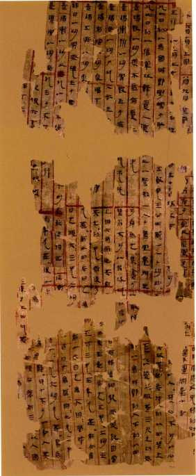原图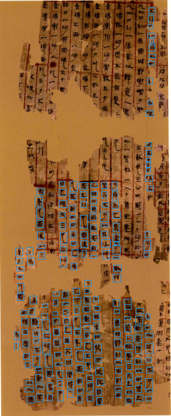已有坐标框282 × 685 px · 219 个框讨论结论：建议剔除 备注：未填写备注原筛查提示（非师兄新增意见）上、中、下三组表格残片分离，与2-12形态相近；另有此前记录的大片漏标。此图此前已按用户要求剔除，本轮仅加入历史讨论展示，不自动恢复。
2-79此前已剔除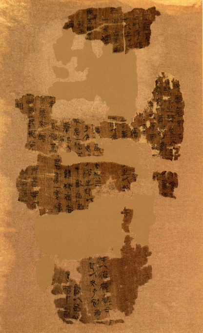原图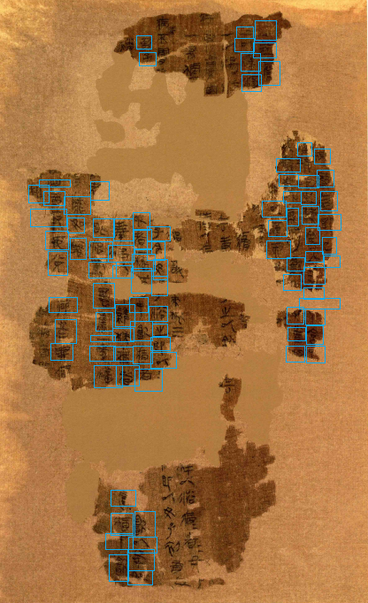已有坐标框416 × 682 px · 92 个框讨论结论：建议剔除 备注：未填写备注原筛查提示（非师兄新增意见）分为多块分离残片，页面连续性差；文字仍可见，不能以不可辨认为由删除。若排除散碎残卷，可纳入。
2-80此前已剔除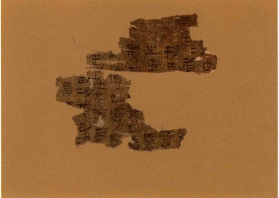原图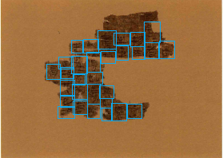已有坐标框279 × 198 px · 30 个框讨论结论：建议剔除 备注：未填写备注原筛查提示（非师兄新增意见）仅存小残片，原图279×198像素、30框。仍可见文字；若目标是较完整的整页版面，可筛出，字符检测任务仍可保留。
2-96此前已剔除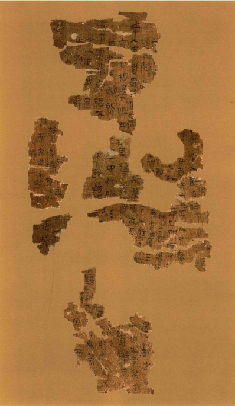原图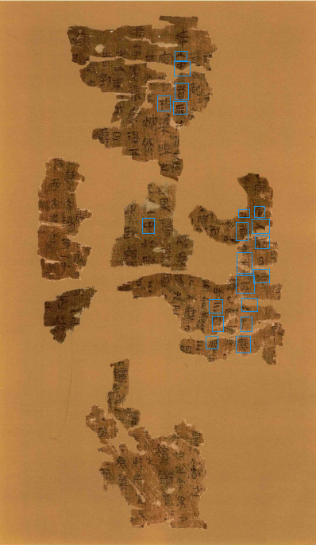已有坐标框398 × 685 px · 20 个框讨论结论：建议剔除 备注：未填写备注原筛查提示（非师兄新增意见）上、中、下为多组散碎残片，组间空隙大，文字块较小。此图此前已按用户要求剔除，本轮仅加入历史讨论展示，不自动恢复。
2-112此前已剔除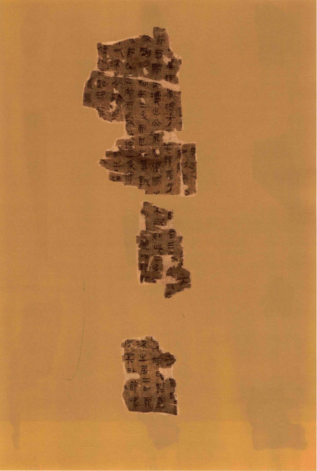原图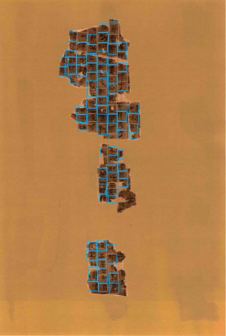已有坐标框461 × 684 px · 97 个框讨论结论：建议剔除 备注：未填写备注原筛查提示（非师兄新增意见）三组分离小残片，背景占比较大；97框，字形仍较清楚。仅在整页完整性要求较高时筛出。
2-135此前已剔除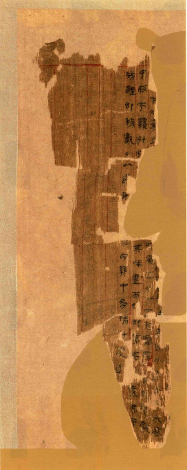原图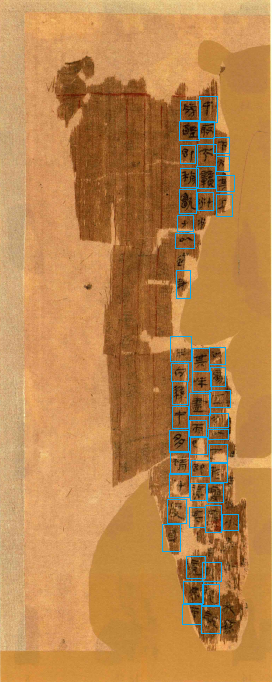已有坐标框272 × 682 px · 50 个框讨论结论：建议剔除 备注：未填写备注原筛查提示（非师兄新增意见）只剩窄条残片，文字主要集中在右侧，底部有磨损；50框。残存字迹仍可见。